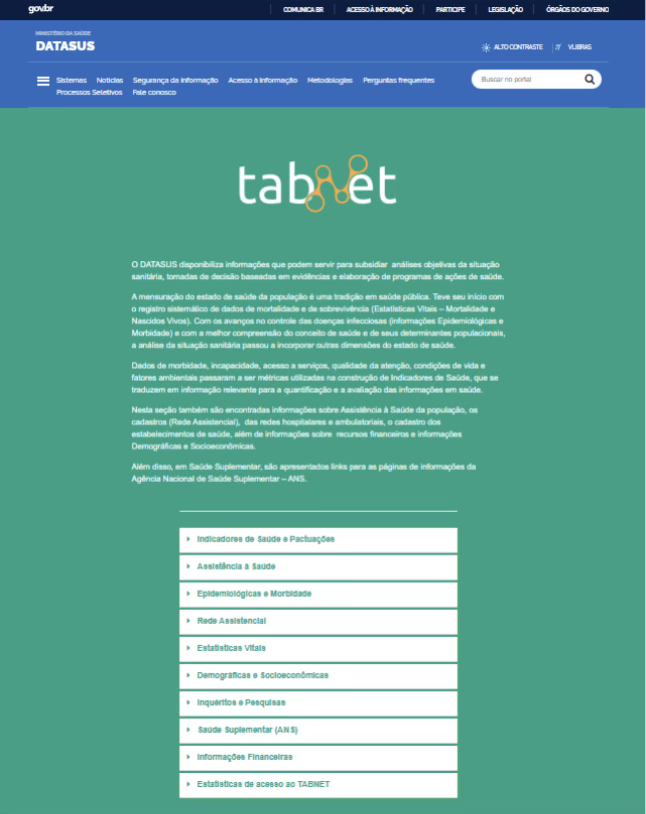
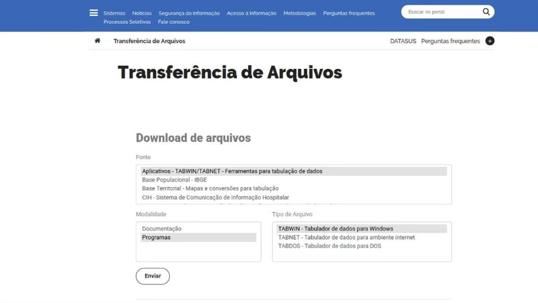
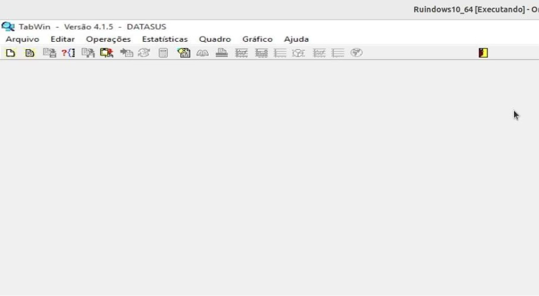

Módulo 3 | Aula 5
Acesso aos dados de Saúde
Acesso aos dados de saúde
O DATASUS
O Departamento de Informática do Sistema Único de Saúde (DATASUS), vinculado à Secretaria de Informação e Saúde Digital do Ministério da Saúde, desempenha papel central na gestão, integração e disponibilização das bases de dados que compõem o Sistema Nacional de Informações em Saúde. Criado com o propósito de apoiar os processos decisórios no âmbito do Sistema Único de Saúde (SUS), o DATASUS consolidou-se como um dos mais importantes provedores públicos de informações em saúde no Brasil, garantindo acesso amplo e gratuito a indicadores demográficos, epidemiológicos, assistenciais e administrativos.
A atuação do DATASUS abrange o desenvolvimento, a manutenção e a disseminação de um conjunto vasto de sistemas de informação de relevância estratégica, porque produzem dados fundamentais para Vigilância Epidemiológica, planejamento em saúde, alocação de recursos e avaliação do desempenho do SUS.
Além de organizar e disponibilizar esses sistemas, o DATASUS atua na padronização e integração de informações, na definição de fluxos de coleta e na orientação técnica para estados e municípios, assegurando consistência metodológica e comparabilidade aos dados ao longo do tempo e entre diferentes regiões.
Para conhecer o DATASUS, acesse https://datasus.saude.gov.br/.
Nesse site, você pode acessar os dados de todos os sistemas de Informação em Saúde a partir do site do DATASUS através das plataformas TABNET e TABWIN. A diferença das duas plataformas está principalmente em como os dados do DATASUS são acessados e analisados.
TABNET
A plataforma TABNET, do DATASUS, é um sistema de tabulação online que permite consultar, cruzar e extrair informações das bases de dados. Por meio de uma interface simples, o usuário pode selecionar variáveis epidemiológicas, demográficas, territoriais e de serviços de saúde, gerando tabelas, taxas, indicadores e séries históricas de forma personalizada. O TABNET é amplamente utilizado para análises situacionais, vigilância em saúde, planejamento de ações, pesquisas acadêmicas e monitoramento de políticas públicas, por oferecer acesso gratuito, público e atualizado a dados oficiais do Ministério da Saúde.
Figura 1 – Tela de acesso ao TabNet.

Fonte: https://datasus.saude.gov.br/informacoes-de-saude-tabnet/
Para acessar o TABNET utilize o link: https://datasus.saude.gov.br/informacoes-de-saude-tabnet/.
Para auxiliar você a usar o TABNET, indicamos um tutorial que o DATASUS disponibiliza: https://datasus.saude.gov.br/wp-content/uploads/2020/02/Tutorial-TABNET-2020.pdf
TABWIN
O TabWin é um software do DATASUS que permite abrir, ler e tabular bases completas de dados de saúde, como arquivos .DBC e .DBF. Ele é utilizado quando se necessita trabalhar com microdados, grandes volumes de registros ou análises que exigem customização avançada e uso offline, diferentemente do TABNET, que oferece apenas tabelas agregadas online.
Com o TabWin é possível importar bases brutas (SIH, SIA, SIM, entre outras), criar tabulações definindo linhas, colunas e conteúdo, aplicar filtros complexos e exportar resultados para Excel, CSV ou texto. Comparado ao TABNET, o TabWin oferece maior nível de detalhe, mais rapidez para grandes bases e alto grau de customização.
Ele é especialmente útil para pesquisadores, estudantes, gestores de saúde e usuários que precisam trabalhar sem internet ou gerar tabulações que não estão disponíveis no TABNET.
Instalação e acesso
A instalação do TabWin é local; o seu acesso se dá a partir de uma base instalada no microcomputador do usuário. O sistema de instalação, arquivos de definição, conversão e bases de dados estão disponíveis em: https://datasus.saude.gov.br/transferencia-de-arquivos/.
Figura 2 – Tela de acesso ao TabWin.

Fonte: https://datasus.saude.gov.br/transferencia-de-arquivos/
Figura 3 – Tela inicial do TabWin.

Fonte: Ministério da Saúde, DATASUS (2026).
Para auxiliar você a usar o TabWin, indicamos alguns tutoriais disponibilizados pelo DATASUS:
- Sistema online de tabulação de dados.
- Acesso direto pelo navegador.
Facilidades:
- Não precisa instalar nada.
- Funciona pela internet.
- Gera tabelas, gráficos simples e arquivos CSV.
- Ideal para consultas rápidas e usuários iniciantes.
- Programa instalado no computador (desktop).
- Funciona offline após baixar os arquivos de dados.
Facilidades:
- Mais potente e flexível.
- Permite:
- Cruzamentos mais complexos.
- Trabalhar com grandes volumes de dados.
- Análise detalhada por município, bairro, estabelecimento etc.
- Requer instalação e algum conhecimento técnico.
Vídeos
Aprendendo a usar o TabNet e o TabWin
Tutorial em vídeo narrado pela professora, em três partes.
Vídeo 1/3 — Baixando o TabWin
Vídeo 2/3 — Tabulando no TabNet e TabWin
Vídeo 3/3 — Tabulando o microdado